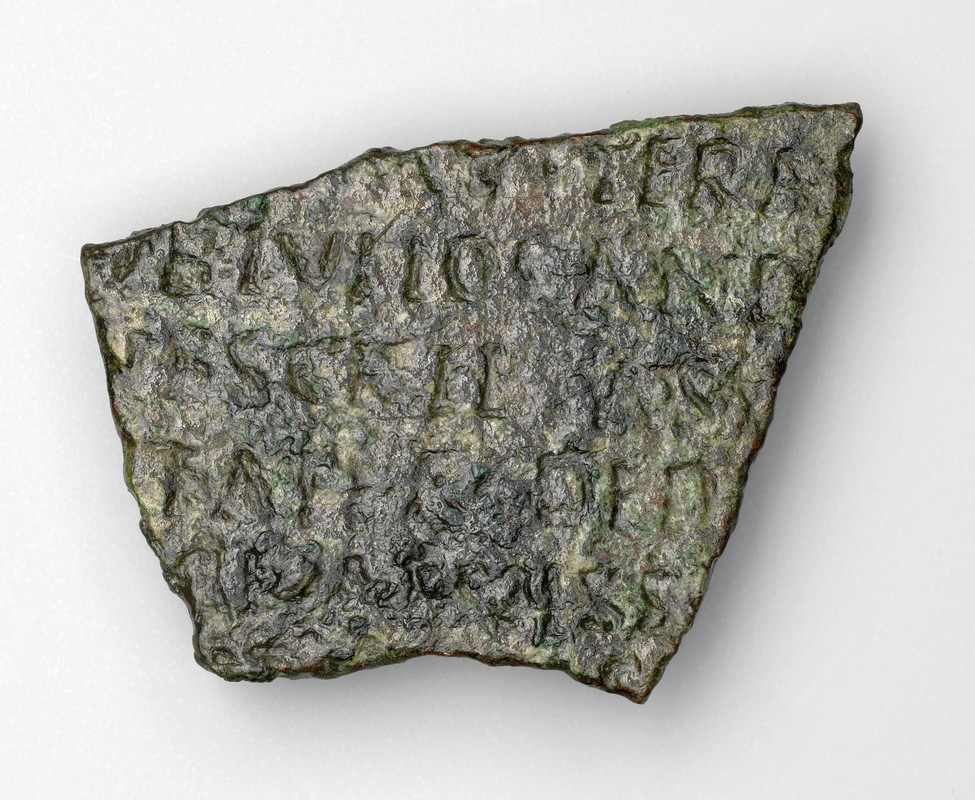

Meni
Naslovnica
Kolofon
Kazali
Kazalo vsebine
Seznam slik
Razstava
Prisotnost rimske vojske na Ptuju
Rimska vojaška diploma z Vičave na Ptuju
Kaj so rimske vojaške diplome?
Video
Domov
Naslovnica
Kolofon
Kazali
Kazalo vsebine
Seznam slik
Razstava
Prisotnost rimske vojske na Ptuju
Rimska vojaška diploma z Vičave na Ptuju
Kaj so rimske vojaške diplome?
Video
RIMSKA VOJAŠKA DIPLOMA Z VIČAVE NA PTUJU
Razstava ob 1950-letnici vojaškega posveta v Petovioni in ob 100-letnici Filozofske fakultete in Oddelka za zgodovino

Ljubljana
2022